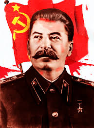
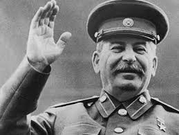

Joseph Vissarionovich Stalin[a] (/ˈstɑːlɪn/;[1] 18 December 1878[2] – 5 March 1953) was a Soviet revolutionary, politician and political theorist. He governed the Soviet Union from the mid-1920s until his death in 1953. In this capacity, he served as the Premier of the Soviet Union from 1941 to 1953 and as General Secretary of the Central Committee of the Communist Party of the Soviet Union from 1922 to 1952. Ideologically a Marxist and a Leninist, he helped to formalise these ideas as Marxism-Leninism while his own policies and theories became known as Stalinism.
Born to a poor Georgian family in Gori, Russian Empire, Stalin was educated at Tiflis Spiritual Seminary. He joined the Marxist Russian Social Democratic Labour Party, edited Pravda, and raised funds for Vladimir Lenin's Bolshevik faction via robberies, kidnappings, and protection rackets. Repeatedly arrested, he underwent several internal exiles. After the Bolsheviks seized power in 1917 and established a one-party state, Stalin sat on the Politburo during the Russian Civil War and helped establish the Soviet Union. Despite Lenin's objections, Stalin consolidated power and removed opposition. During Stalin's tenure the concept of "Socialism in One Country" became a central tenet of Soviet society, and a cult of personality developed around him. Lenin's New Economic Policy was replaced with a centralised command economy, industrialisation and collectivisation. These rapidly transformed the country from an agrarian society into an industrial power,[3] but disrupted food production and contributed to the famine of 1933–34. Between 1934 and 1939, Stalin organised the "Great Purge", in which millions of so-called "enemies of the working class", including senior political and military figures, were interned in Gulag-run prisons, exiled or executed, often without due process.[4][5] In August 1939 Stalin entered a non-aggression pact with Nazi Germany, resulting in their invasion of Poland in September of that year. Germany ended the pact by invading the Soviet Union in 1941. Despite initial setbacks, the Soviet Red Army halted the German incursion and captured Berlin in May 1945, ending World War II in Europe.[6][7] The Soviet Union annexed the Baltic states and backed the establishment of pro-Soviet Marxist governments both throughout Eastern Europe and in China, North Korea, and North Vietnam. The Soviet Union and United States emerged as the two world superpowers,[8] and a period of tensions began between the Soviet-backed Eastern Bloc and U.S.-backed Western Bloc known as the Cold War. Stalin led the Soviet Union through its post-war reconstruction phase, during which it became the second country to develop a nuclear weapon, as well as launching the Great Plan for the Transformation of Nature in response to another major famine and the Great Construction Projects of Communism. Stalin died in 1953 and was succeeded by Nikita Khrushchev, who denounced Stalin and initiated a de-Stalinisation process.
Stalin is widely considered one of the most significant and influential figures of the 20th century. Stalinism influenced various Marxist-Leninist groups and governments across the world, for whom Stalin was a champion of socialism and the working class. After the fall of the Soviet Union, Stalin has been praised by supporters for his role in defeating Nazi Germany and establishing the Soviet Union as a major world power. Critics emphasise his role in causing millions of deaths and numerous political, religious and ethnic repressions.